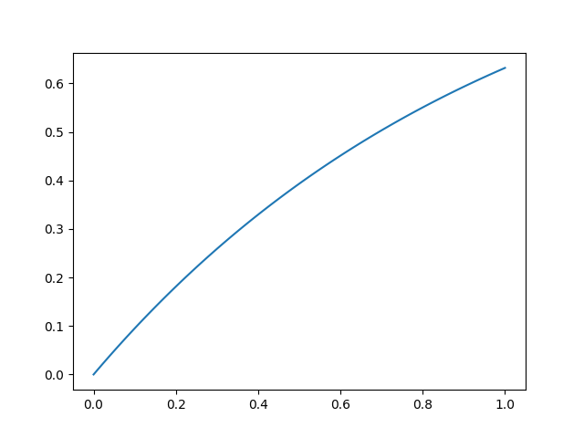

朋友给的一道概率题
引子
今天在某学校的校群里看见一个问题等着求解。题面大概是这样的：
某公交车站在上午$10$时至$11$时之间有一辆公交车经过。
求上午$10$时$30$分时刻，公交车经过的概率为多少？
指数分布
刚开始我还给这题唬住了，思考了一会儿后觉得应该用指数分布得到概率函数。然后给出了接下来的解法：
$解:,由指数分布数学期望, 得\frac{1}{\lambda}=\frac{1}{1}. 解得\lambda =1.$
$\qquad 代入\lambda 得P{T\leq t}=F(t)=1-e^{-\lambda t}=1-e^{-t}.$
$\qquad 当t=0.5时, P(t)=1-e^{-1}\approx 63.21%.$
如果把图像作出来，是长这样：

能看出来问题。每个时刻都应该只有来或不来两种情况，刚开始的时候不应该如此接近$0$啊。所以我们不应该使用指数分布。
古典概型和几何概型
古典概型可以用于样本容量有限、情况为有限个、且每种情况等可能时用于计算概率。但如果有一个圆作为范围，如果向有限平面中任意丢硬币，进入范围计数，此时虽然样本容量有限、情况等可能，但硬币丢入的位置只是点，不占面积。此时便有无穷种可能，不可以使用古典概型，此类解决方法叫做几何概型。对于此处的来车问题，每个时刻车来或不来的概率是相同的，但对于整体来说，此处的概率还和开始以来是否有车经过相关，因此此处也有无穷种可能，可以用几何概型概括。
在此情况中，由于有无数多个时刻（瞬间），因此每个时刻来车的概率为$0$。
如果改为区间呢？
如果把题目中的$10:30$时刻改为$10:30$至$10:31$区间的一分钟，那么此处的概率如何计算？
听起来很唬人，但是此处的数学期望就是$1$小时来$1$次车，因此每分钟的概率都相等，等于$\frac{1}{60}$。
有更好的解决方法或答案？
上述除题面外的所有解释都可以当作我一派胡言，不用太过在意，我自己目前也对结果不满意。
在此，我向各位征集想法，此题具体应该如何解决。可以向我投稿你的想法，电子邮件或下方评论皆可。诸君，这辆车实在是太烦人了。
朋友给的一道概率题